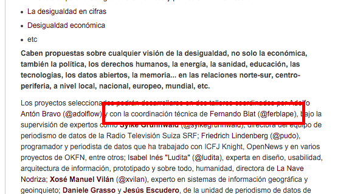

Github.com y Git
Cómo trabajar y publicar nuestros proyectos en Github.com
Fernando Blat // @ferblape

Coordinador técnico
http://medialab-prado.es/article/convocatoria-explorando-desigualdad

Asistencia técnica
- Preguntas sobre tecnología
- Herramientas de scrapping
- Herramientas para limpiar datos
- Publicación de los trabajos
- ...
¿Qué es Github.com?
¿Qué es Github.com?
Powerful collaboration, code review, and code management for open source and private projects. Public projects are always free.
Y datos...
Y presentaciones...
Tres ejemplos
¿Qué es Github.com?
Una herramienta colaborativa para crear y difundir proyectos de programación e información digital
Difusión
Difusión
Perfiles de usuario: https://github.com/ferblape
Trabajos https://jobs.github.com
Colaborativa
Los proyectos de Github se llaman repositorios
Un repositorio pertenece a una persona (u organización)
Los repositorios se pueden clonar, modificar, y volver a unificar
Colaborativa
Varios clones de un mismo proyecto
Un proyecto se clona para ser modificado
Se puede solicitar la re-unificación
Colaborativa
Los cambios en los ficheros se registran en commits
Cada commit va asociado a un mensaje de cambio
Ejemplo de colaboración
Carmen y Manuel trabajan en un proyecto de periodismo de datos.
Deciden guardar sus CSVs en un repositorio de Github:
datos/municipios.csvdatos/candidatos.csvdatos/propuestas.csv
municipios.csv
| Cod INE | Municipio |
|---|---|
| ... | ... |
| 28079 | Madrid |
| 46250 | Valencia |
| ... | ... |
candidatos.csv
| Cod INE | Nombre candidato |
|---|---|
| ... | ... |
| 28079 | Manuela Carmena |
| 28079 | Esperanza Aguirre |
| 28079 | Antonio Miguel Carmona |
| ... | ... |
propuestas.csv
| Nombre candidato | Propuesta titular | Propuesta descripción |
|---|---|---|
| ... | ... | ... |
| Esperanza Aguirre | Wifi en toda la ciudad | ... |
| Antonio Miguel Carmona | Bajar los impuestos | ... |
| ... | ... | ... |
Ejemplo de colaboración
Carmen trabaja en asegurarse que el nombre de los municipios en las tres tablas sea correcto:
municipios.csv, candidatos.csv, propuestas.csv
Manuel trabaja en los datos de las propuestas electorales: propuestas.csv
Ejemplo de colaboración: escenario 1
A las 13:30h, Carmen detecta un error en el fichero de candidatos
¿Cómo subir proyectos a Github?
¿Cómo subir proyectos a Github?
- Creándose una cuenta
- https://desktop.github.com/
- https://help.github.com/
- Preguntar al asistente técnico
Elementos de un proyecto
- Directorios y ficheros
- Fichero
README.md - Fichero
LICENSE - Cualquier otro meta-fichero que pueda ser útil
Fichero README.md
La extensión .md viene del lenguaje Markdown
Markdown es un formato ligero de texto plano pensado para ser convertido a HTML sin perder legibilidad
<h2>Esto es un titular</h2> <p>Esto es un texto con <strong>negrita</strong>, <em>cursiva</em>, <a href="http://github.com">y un enlace</a></p> <p>Esto es otro párrafo</p> <ul> <li>Esto es</li> <li>una lista</li> <li>de varios elementos</li> </ul>
### Esto es un titular Esto es un texto con **negrita**, _cursiva_, [y un enlace](http://github.com) Esto es otro párrafo - Esto es - una lista - de varios elementos
Resumen Markdown
Titulares: #, ##, ###, ####
Negritas: **negrita**
Cursivas: _cursivas_
Enlaces: [y un enlace](http://github.com)
Listas: - elementos de la lista
Más información: Markdown
Licencias
Crear un fichero LICENSE
Copiar el contenido de la licencia en él. Por ejemplo: Creative Commons